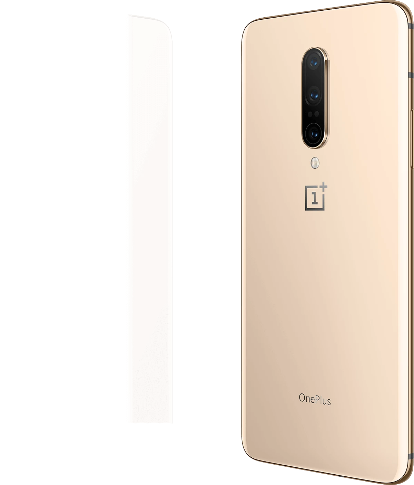
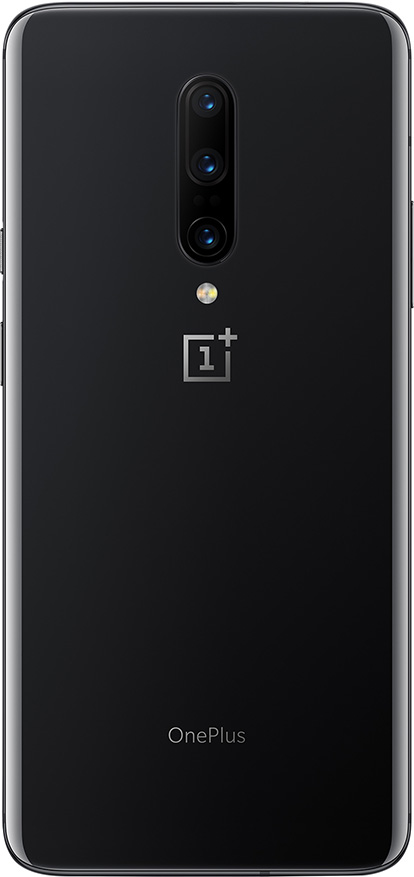
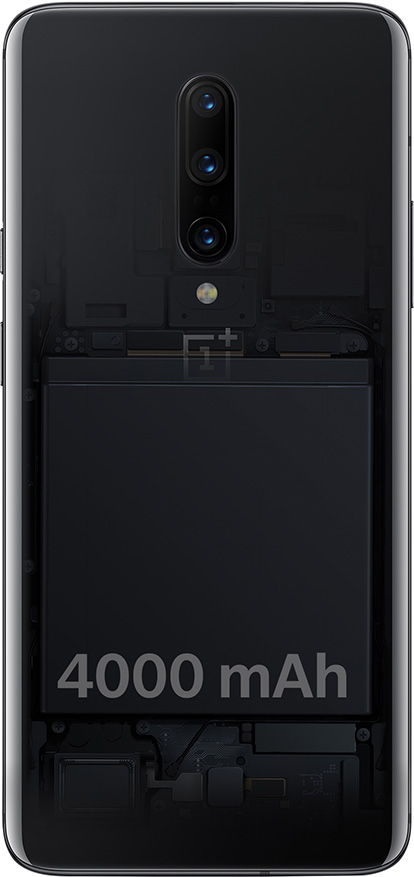

Фронтальная камера
Вот она
Камера поднимается из корпуса за полсекунды и прячется обратно. Поэтому в экране нет ни чёлки, ни отверстия.
- 16Мп
- 0,53секунды
- 0вырезов
Выдвижная камера
Камера, которой не видно
- 0,53 сЗа столько камера поднимается из корпуса, когда включаешь съёмку на себя.
- РентгенВнутри маленький мотор. Он крутит винт, а винт поднимает каретку с камерой.
- 300 000 разНа столько подъёмов рассчитан механизм: это 150 раз в день больше пяти лет.
Основные камеры
Три камеры в один ряд
Главная на 48 Мп с оптической стабилизацией, телеобъектив с приближением 3× и сверхширокая с углом 117°.
- 48Мп
- 3×приближение
- 117°широкий угол


Батарея
4000 мА·ч под крышкой
Сканер проходит по корпусу и показывает батарею: она занимает больше половины телефона. Зарядка Warp Charge 30 даёт половину заряда за 20 минут.
- 4000мА·ч
- 30Вт
- 20минут до 50%
В цифрах